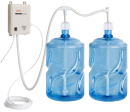

<div class="w-full h-full px-5">
  <section class="w-full bg-[#5A8987] text-white text-center py-2 px-5 rounded-lg">
    <span>Estado del sistema de riego</span>
  </section>

  <section class="flex flex-col items-center justify-center h-full">
    <div class="bg-gradient-to-b from-[#ffffff] to-[#014946] rounded-xl">
      <div class="p-2 bg-gradient-to-b from-[#C7D6D5] to-[#C7D6D5] rounded-xl">
        <div class="bg-[#014946] flex justify-center items-center rounded-lg py-3">
          
        </div>
  
        <span class="py-2 block text-center text-sm">
          Estado del riego sistema de riego principal
        </span>
      </div>
  
      <div class="p-2 text-center text-white font-semibold">
        <span>Encendido</span>
      </div>
    </div>
  </section>
</div>